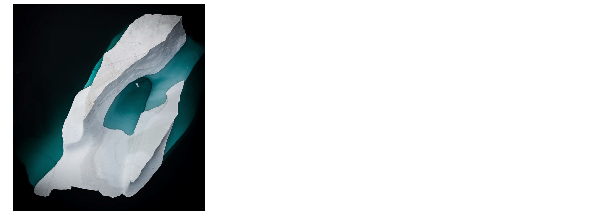
PORTFOLIO
YANG DAZHEN
2018-2019
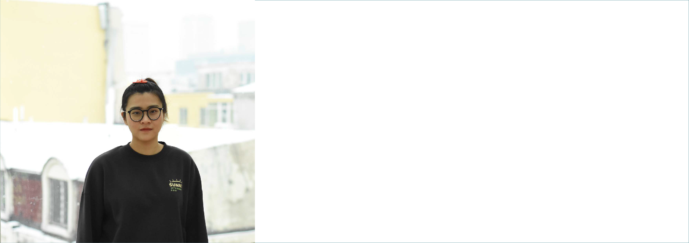
nationa
Personal Information Content
Undergraduate School
2016-2020
Harbin Institute of Technology Digital Media Technology
Intern Experience
2018.6-2019.1
CCTV-Securities News Channel Assistant Director
Awards
Second prize of the People's scholarship in China in 2017
Provincial third prize in Computer Design Competition for College Students in China
Skills
Computer Language: Java, C++, html, CSS, JavaScript
PS, AI, ID, PR, AE, Flash
Autodesk Maya, 3D Studio Max, Sketchup Unity 3D
Wash=Clean?
VR design
《The Crowd》
Game design
Hezhen Culture
Web design
Inspired color matching
Installation+APP
Other Works
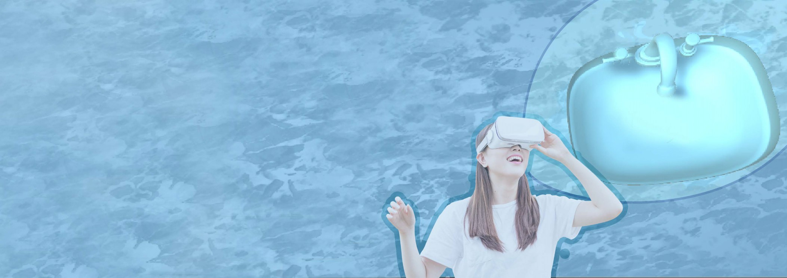
1Wash=Clean?
As the water contamination becomes an increasingly severe problem, which affect
hundreds of sousands of people’s life negtively, this project aims to make user realize how much the subtle behavior in the daily life could harm the environment and themselves through interactive experience.
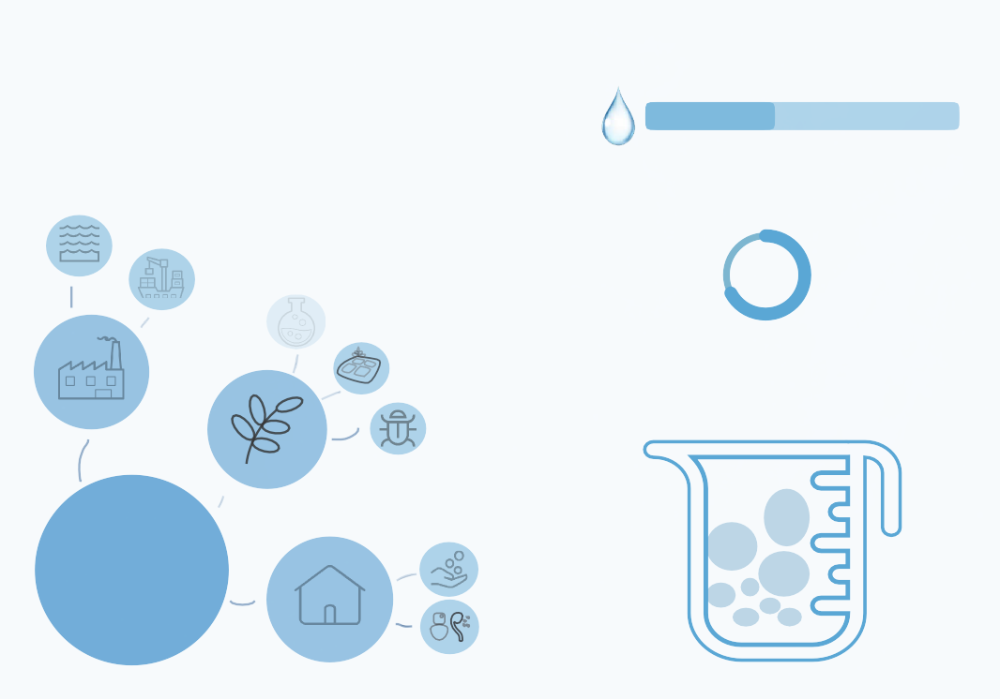
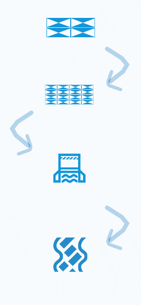
COARSE SCREENS
FINE SCREENS
PRIMARY HYDROLYTIC ACIDIFICATION
SECONDARY HYDROLYTIC ACIDIFICATION
Contray to the rapidly developed technology, the water resource becomes scarce today, and especially, in developing countries, dirty water from daily life and factory pollute the river without appropriate process of recycle.
WASTE WATER
2.8 billion
People will be lack of water in the estimate of 2025.
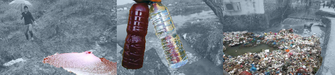
TRANSPORTATION
CHEMICAL SOLUTIONn
CHEMICAL FERTILIZER
60%
Of used water is recycled in China cities in average.
The pictures are taken in the rural area in the China. The river becomes red because of the pollution from nearby company. And the river is filled with plastics.
factory
agriculture
PESTICIDE
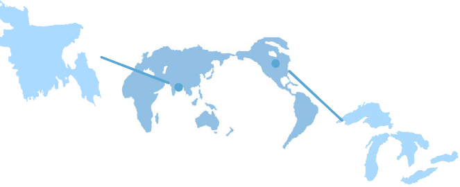
85 percents of groundwater is polluted. The most dangerous pollutant is
arsenic which has fatal effect to 1.2million people.
Bangladesh
The Great Lakes
To dig and dispose the sediments, the everage cost is about 400 dollars
every cubic meters.
350g
SOURCES
WASHING
250g BOD
CR
COD
250mg SS
life
TOILET
PB hg
Most people, especially in the developing countries, are unconscious of the importance of water pollution and recycling.
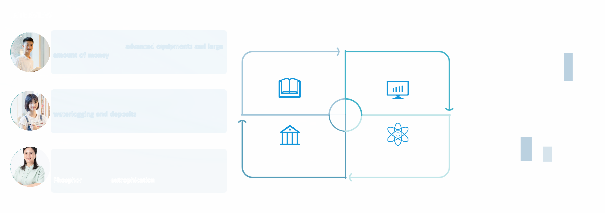
Jia Qi a student majored in water supply engineering
"Recycling the water requires advanced equipments and large amount of money, so companies always discharge dirty water to the nearby river in order to save money."
pollutants discharged beyond the national standards shall be charged for extra.
China's annual economic losses caused by water shortage are about 50 billion yuan.
carp
money
equipment
professional
visualize
fertilizer
recycle
conciousness
pesticide
pollution
sense
space
museum
despire
effect
wash
display
glass
animals
starvation
Ming Yu a student studied in London for four years
"Every time when I boiled the water to drink, there is much
waterlogging and deposits in the bottom of the pot, which means the water is hard."
Policy Society
Economy Technology
process
quality
solid
rice
water chemistry
Meng Li a resident in a city of China
"I thought most water could be recycled, so we do not have to save water in the daily life, but I would buy the wash powder without Phosphor to prevent eutrophication ."
The world's sewage discharge has reached 400 billion cube meters, which polluted 5.5 trillion water.
Desalination of sea water could cost about 1 dollar every cube meter.
environment
house
toilet
bacteria
evil
lovely
disease
monster
The Butterfly Effect
soldier
solidity
transparent
plastic
light
paper
technology
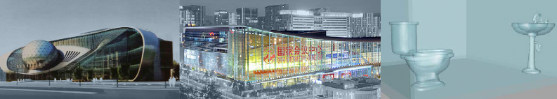
Hard to Understand
Understanding the process of waste water
recycling needs professional knowledge.
Use characters to visualize
China Science and Technology Museum International Environmental Protection
Industry Exhibition
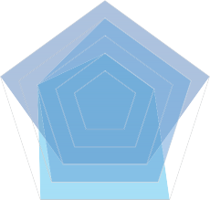
interaction
Design Opportunity
Concentrate the process of recycling in smaller space and shorter period of time to make the effect manifest.
stimulated thinking
Sustainable development design
Waterhouse
×
Hard to Realize
Cannot get official data and observations of
water resource from a macroscopic view.
√
Concept Value
Make visual scale smaller
RECYCLE
INTERACTION
CHARACTER
interests
aesthetics
×
Hard to Spread
Traditional museums have heavy installations
that are difficult to make exhibition around.
√
Main Functions
data visualization
intreresting display
Use the VR form
The science and technology museums in Beijing and Harbin just show pictures or display the process of recycling water, but people are tired of persuad and theroy, who tend to interact with interesting installation.
Core Mechanism
doing daily behavious
watching the changes of the water house
technology accomodation
× √
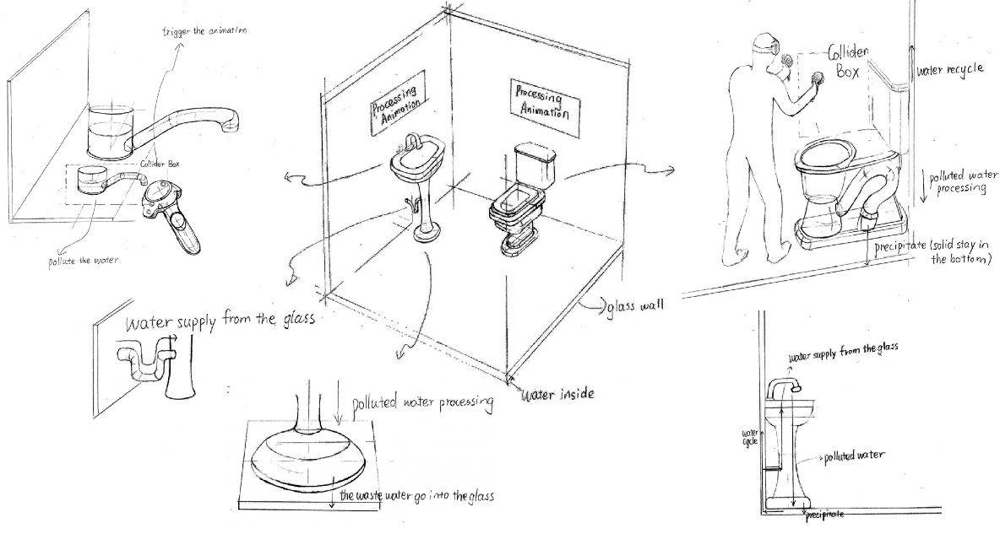
Go to the toilet
Enter the house
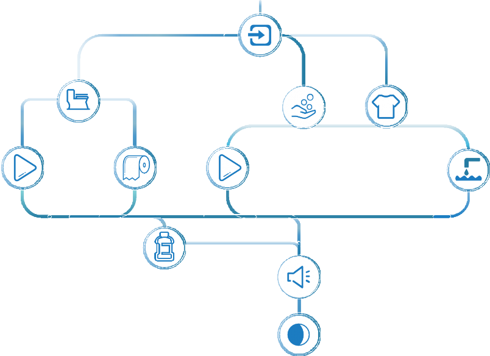
Wash hands
Wash clothes
Recycling animation
SS into wall
Recycling animation
BOD into wall
The transparent person drink water. Pollutant come into body.
Radio:"the factory nearby discharged waste water."
The water becomes dirty. No light in the house.
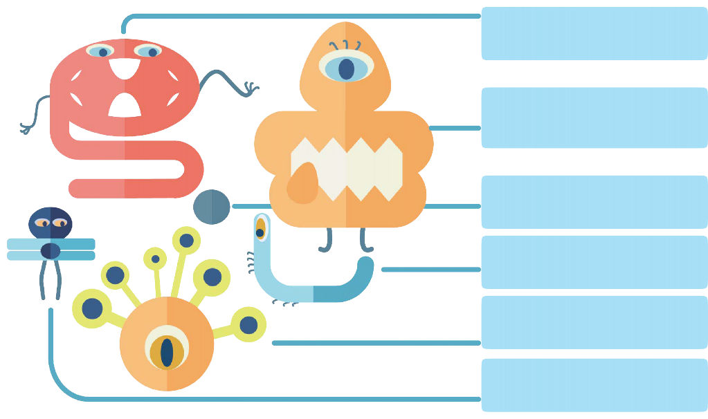
Large Intestine Cancer
He is aggresive, who could destroys human's imune system with his claws. Most evil in the five disease.
Oil
She has a bad relationship with water, so she is always on the surface of the water, which could cause contamination.
Suspended Solid
A simple blind fool.
Parasite
Tiny and hard to deal with. He could spread disease quickly among people invisibly.
Skin Ulcers
She could do harm to human's skin, which could lead to death.
Mouth Disease
With the ridiculous appearance, he could makes men's mouth black.
Drinking dirty water could cause many health probloms.
PROCESSING ANIMATION|Recycling Process Characters
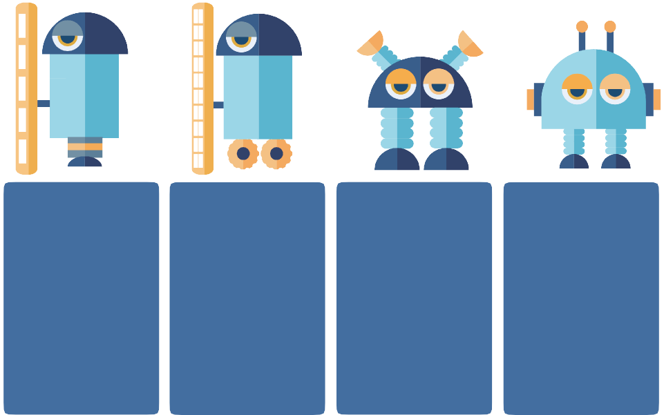
Vanguard
Brother of the soilder with
delicate shield.
Center forward
Brother of the soilder with crude
shield.
Wingback
Deal with the prisoner caught by
shield soilder.
Technical support
Tiny and smart enimies would be
killed by him.
weapon:
simple&crude shield
weapon:
delicate shield
weapon:
sendimentation tank
weapon:
filter
character:
brave but careless
character:
careful
character:
patient and strict
character:
intelligent and careful
enemy:
large suspended solid
enemy:
most suspended solid
enemy:
solid precipitant
enemy:
chemical polutant
Every part of the process is like the soldier who protect the clean water.
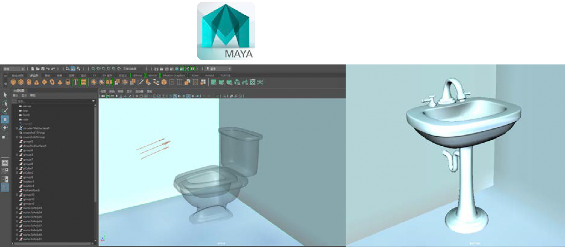
Modeling
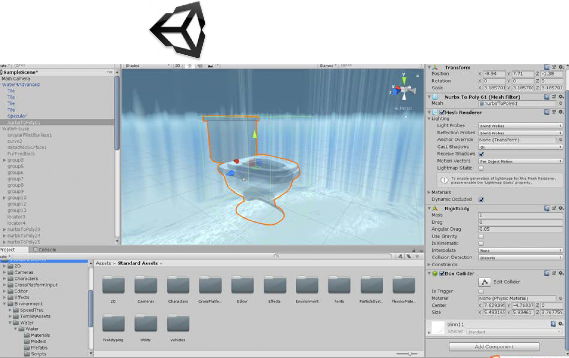
Adding Components
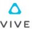
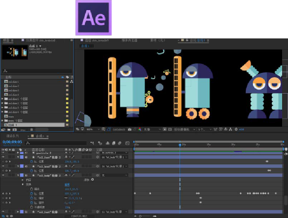
2D Animation
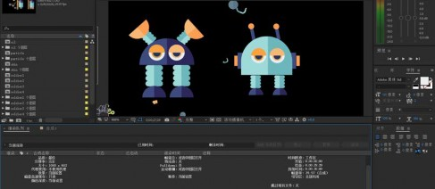
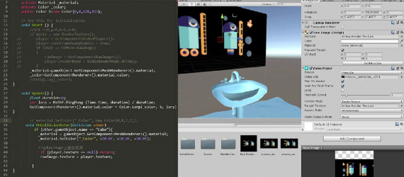
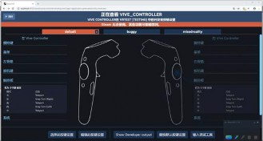
https://youtu.be/51vKdqEmx6s
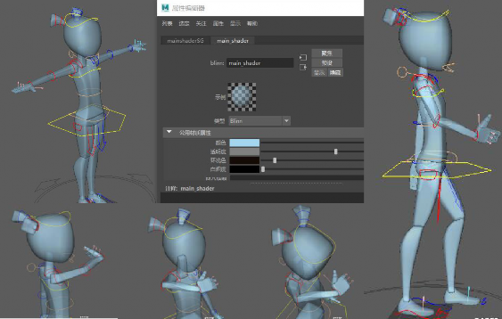
VR Connecting
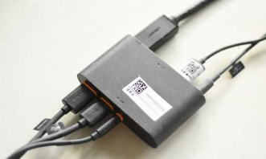
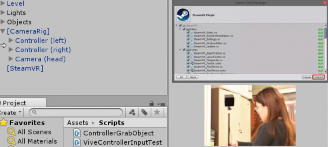
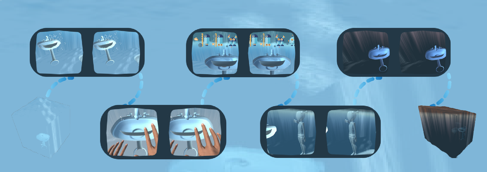
The water in the glass turns black from clear, enabling people to see the process of polluting and realize the importance of water cycle.
The particles around the tap indicate users to interact. The process animation begins on the wall.
After the nearby factory polluted the water.
The whole space is surounded by clear water.
User's hands get into the collider box, which means washing hands.
Water turns dark, and when the transparent girl in the scene is drinking, bad chemicals get into her body.
Dirty water disables light to get in.